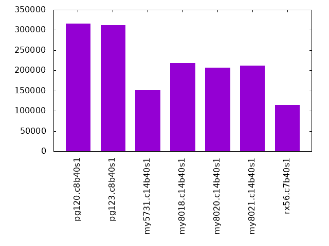
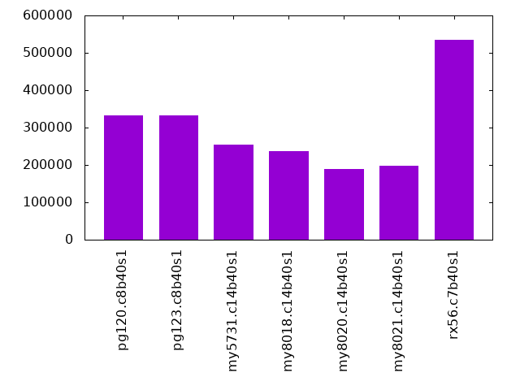
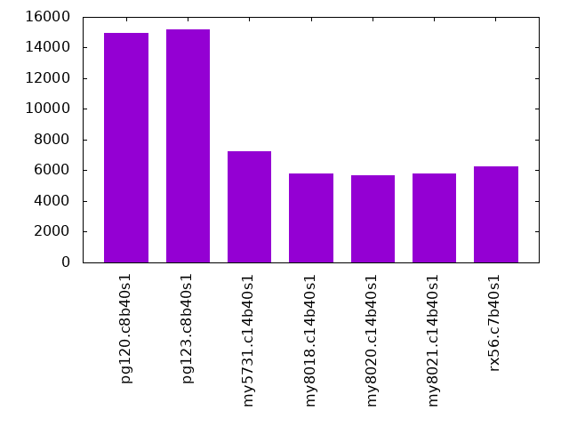
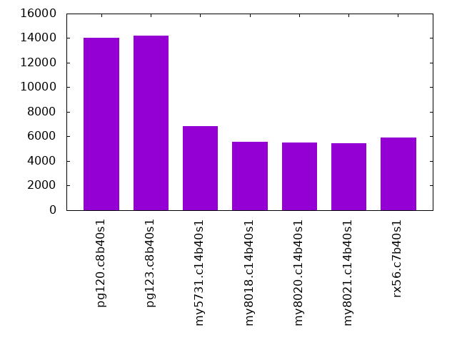
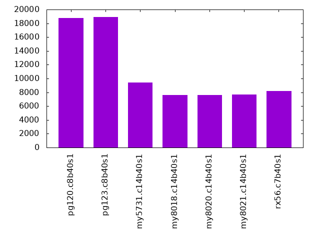
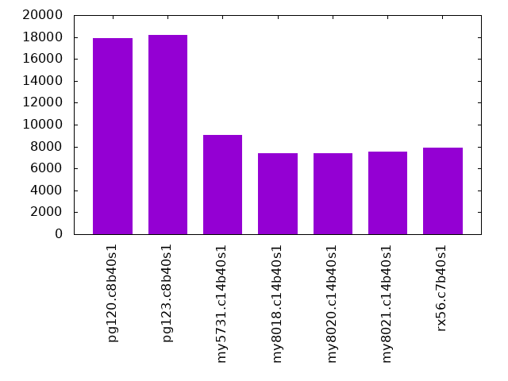
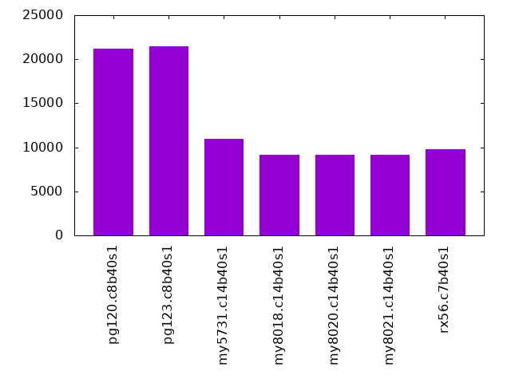
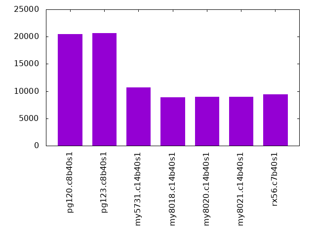

This is a report for Linkbench with Linkbench with maxid1=10m. It is generated by scripts. An overview of Linkbench is here. Below, by DBMS, I mean DBMS+version.config. An example is my8020.c10b40 where my means MySQL, 8020 is version 8.0.20 and c10b40 is the name for the configuration file. All configurations are currently stored here.
The test server is a c3.8xlarge host with 20,000 EBS PIOPs, 60G RAM and 16 CPU cores (HT disabled). Clients and the DBMS share one server.
The tested DBMS are:
Numbers are inserts/s for l.pre, indexed rows/s for l.post and transactions/s for the transaction tests (L*.P*). The range of values is split into 3 steps: bottom 25%, middle 50%, top 25%. Values in the bottom have a red background, values in the top have a green background. The l in l.pre and l.post stands for load. The L in L1.* to L6.* stands for loop and the transaction tests are run in that sequence. The P in L*.P8, L*.P12 and L*.P16 stands for parallel and represents the number of concurrent clients.
| dbms | l.pre | l.post | L1.P8 | L2.P8 | L3.P8 | L4.P8 | L5.P8 | L6.P8 |
|---|---|---|---|---|---|---|---|---|
| pg120.c8b40s1 | 315214 | 332432 | 14981 | 14005 | 18792 | 17892 | 21158 | 20516 |
| pg123.c8b40s1 | 311491 | 332432 | 15166 | 14198 | 18949 | 18180 | 21458 | 20668 |
| my5731.c14b40s1 | 150702 | 254401 | 7259 | 6817 | 9454 | 9079 | 10939 | 10709 |
| my8018.c14b40s1 | 218560 | 236882 | 5800 | 5567 | 7642 | 7366 | 9154 | 8847 |
| my8020.c14b40s1 | 207117 | 190189 | 5698 | 5500 | 7644 | 7413 | 9189 | 8991 |
| my8021.c14b40s1 | 212115 | 198791 | 5775 | 5478 | 7711 | 7500 | 9192 | 8984 |
| rx56.c7b40s1 | 113676 | 534586 | 6267 | 5923 | 8217 | 7928 | 9739 | 9457 |
l.pre: load 10 million rows (documents) without secondary index on Linktable.
Inserts/s average
HW performance results normalized by throughput. Legend is here
ips secs rpi rkbpi wkbpi cspi cpupi csecpq dsecpq csec dsec dbgb1 dbgb2 cnf 315214 251 0.000 0.000 0.701 0.1 73 3.6 0.0 286 0 14.2 33.5 pg120.c8b40s1 311491 254 0.000 0.000 0.709 0.1 75 3.7 0.0 289 0 14.2 33.5 pg123.c8b40s1 150702 525 0.000 0.000 0.722 0.1 192 2.6 27.3 208 2157 13.2 53.9 my5731.c14b40s1 218560 362 0.000 0.000 0.735 0.2 133 2.9 19.8 228 1568 14.1 54.8 my8018.c14b40s1 207117 382 0.000 0.000 0.789 0.2 139 3.0 20.3 238 1607 15.7 56.4 my8020.c14b40s1 212115 373 0.000 0.000 0.734 0.2 143 2.9 21.0 226 1663 13.9 54.6 my8021.c14b40s1 113676 696 0.000 0.000 0.385 0.0 307 2.5 46.5 200 3677 6.7 17.4 rx56.c7b40s1
HW performance results not normalized by throughput. Legend is here
ips secs rps rmbps wmbps csps cpups cutil dutil vsz rss cnf 315214 251 0 0 216 27928 23.2 1.139 0.000 0.1 0.0 pg120.c8b40s1 311491 254 0 0 216 27929 23.3 1.137 0.000 0.1 0.0 pg123.c8b40s1 150702 525 0 0 106 8876 28.9 0.397 4.109 46.3 15.1 my5731.c14b40s1 218560 362 0 0 157 40862 29.1 0.628 4.331 45.3 16.4 my8018.c14b40s1 207117 382 0 0 160 39986 28.8 0.622 4.207 45.3 17.6 my8020.c14b40s1 212115 373 0 0 152 38381 30.3 0.605 4.458 45.3 16.1 my8021.c14b40s1 113676 696 0 0 43 4214 34.9 0.287 5.283 1.3 0.6 rx56.c7b40s1
l.post: create secondary index on Linktable.
Indexed rows/s average
HW performance results normalized by throughput. Legend is here
ips secs rpi rkbpi wkbpi cspi cpupi csecpq dsecpq csec dsec dbgb1 dbgb2 cnf 332432 238 0.000 0.000 0.188 0.0 20 0.0 0.0 0 0 19.3 40.7 pg120.c8b40s1 332432 238 0.000 0.000 0.187 0.0 20 0.0 0.0 0 0 19.3 40.7 pg123.c8b40s1 254401 311 0.000 0.000 0.638 0.1 17 0.0 30.3 0 2394 17.6 51.1 my5731.c14b40s1 236882 334 0.000 0.000 0.681 0.1 12 0.0 22.9 0 1809 18.5 52.0 my8018.c14b40s1 190189 416 0.000 0.000 0.674 0.0 13 0.0 23.4 0 1848 20.0 53.6 my8020.c14b40s1 198791 398 0.000 0.000 0.668 0.0 13 0.0 23.9 0 1889 18.2 51.8 my8021.c14b40s1 534586 148 0.000 0.000 0.115 0.0 12 0.0 48.0 0 3796 10.5 14.1 rx56.c7b40s1
HW performance results not normalized by throughput. Legend is here
ips secs rps rmbps wmbps csps cpups cutil dutil vsz rss cnf 332432 238 0 0 61 359 6.6 0.000 0.000 NA NA pg120.c8b40s1 332432 238 0 0 61 402 6.5 0.000 0.000 NA NA pg123.c8b40s1 254401 311 0 0 159 16681 4.4 0.000 7.698 46.5 19.1 my5731.c14b40s1 236882 334 0 0 158 19481 2.9 0.000 5.416 45.4 20.3 my8018.c14b40s1 190189 416 0 0 125 9410 2.5 0.000 4.442 45.4 21.6 my8020.c14b40s1 198791 398 0 0 130 9649 2.6 0.000 4.746 45.4 20.0 my8021.c14b40s1 534586 148 0 0 60 838 6.4 0.000 25.649 6.6 4.9 rx56.c7b40s1
L1.P8: transactions with 8 clients, run for 3600 seconds.
Transactions/s average
HW performance results normalized by throughput. Legend is here
qps secs rpq rkbpq wkbpq cspq cpupq csecpq dsecpq csec dsec dbgb1 dbgb2 cnf 14981 3600 0.001 0.007 1.223 7.1 1854 116.8 0.0 6299 0 24.0 57.6 pg120.c8b40s1 15166 3600 0.001 0.004 1.208 7.1 1839 115.5 0.0 6304 0 24.3 57.8 pg123.c8b40s1 7259 3600 0.000 0.000 3.260 7.5 2910 290.5 265.1 7593 6928 23.2 56.7 my5731.c14b40s1 5800 3600 0.000 0.000 3.541 11.8 2655 262.8 324.9 5488 6784 23.7 57.2 my8018.c14b40s1 5698 3600 0.000 0.003 3.447 12.0 2620 259.7 329.9 5328 6768 25.2 58.7 my8020.c14b40s1 5775 3600 0.000 0.003 3.421 10.9 2595 254.9 315.8 5299 6566 23.4 56.9 my8021.c14b40s1 6267 3600 0.001 0.008 0.861 7.2 2991 273.1 306.2 6162 6909 12.1 12.9 rx56.c7b40s1
HW performance results not normalized by throughput. Legend is here
qps secs rps rmbps wmbps csps cpups cutil dutil vsz rss cnf 14981 3600 8 0 18 106732 27.8 1.750 0.000 0.1 0.0 pg120.c8b40s1 15166 3600 12 0 18 108243 27.9 1.751 0.000 0.1 0.0 pg123.c8b40s1 7259 3600 0 0 23 54228 21.1 2.109 1.924 46.5 24.3 my5731.c14b40s1 5800 3600 0 0 20 68575 15.4 1.524 1.884 45.5 25.0 my8018.c14b40s1 5698 3600 1 0 19 68619 14.9 1.480 1.880 45.4 26.2 my8020.c14b40s1 5775 3600 1 0 19 62666 15.0 1.472 1.824 45.4 24.6 my8021.c14b40s1 6267 3600 4 0 5 45140 18.7 1.712 1.919 18.9 15.4 rx56.c7b40s1
Reponse time for Link operations. Legend is here Entries in the header that end with 9 are p99, x are max and m are mean. All values are in milliseconds.
al9 alx alm dl9 dlx dlm ul9 ulx ulm cl9 clx clm mg9 mgx mgm gll9 gllx gllm cnf 4 352.8 1.629 4 352.9 1.494 4 352.9 1.655 0.4 11.3 0.135 0.4 129.0 0.265 21 160.3 0.786 pg120.c8b40s1 4 118.0 1.612 4 118.4 1.479 4 125.0 1.639 0.4 11.3 0.134 0.4 53.6 0.263 20 218.6 0.767 pg123.c8b40s1 10 126.5 4.360 10 206.2 3.848 10 127.9 4.437 0.3 197.6 0.167 0.4 17.1 0.255 30 199.5 1.136 my5731.c14b40s1 12 219.7 6.210 12 162.2 5.509 12 219.1 6.315 0.3 27.5 0.177 0.4 166.1 0.277 24 102.9 1.004 my8018.c14b40s1 12 314.8 6.380 12 182.7 5.640 13 312.4 6.471 0.3 6.9 0.179 0.4 208.2 0.279 24 466.7 0.994 my8020.c14b40s1 11 192.7 6.293 11 187.6 5.575 12 197.4 6.383 0.3 181.0 0.178 0.4 149.8 0.279 23 167.7 0.983 my8021.c14b40s1 13 376.2 5.190 12 93.7 4.534 13 376.8 5.243 0.3 210.1 0.183 0.4 80.4 0.305 31 217.4 1.211 rx56.c7b40s1
Reponse time for Node operations. Legend is here Entries in the header that end with 9 are p99, x are max and m are mean. All values are in milliseconds.
an9 anx anm un9 unx unm dn9 dnx dnm gn9 gnx gnm cnf 4 340.0 1.397 4 208.6 1.381 4 30.7 1.368 0.3 154.0 0.117 pg120.c8b40s1 4 102.3 1.383 4 93.0 1.404 4 55.4 1.394 0.3 120.6 0.115 pg123.c8b40s1 10 128.8 4.149 10 114.0 4.138 10 76.0 4.122 0.3 208.0 0.172 my5731.c14b40s1 12 193.4 5.715 12 214.2 5.760 12 101.0 5.694 0.3 183.7 0.183 my8018.c14b40s1 12 314.4 5.833 12 203.9 5.910 12 52.6 5.783 0.3 212.0 0.184 my8020.c14b40s1 11 189.5 5.748 11 177.0 5.817 11 119.9 5.705 0.3 172.7 0.182 my8021.c14b40s1 13 367.7 5.062 13 367.5 5.048 13 79.4 5.038 0.3 221.9 0.188 rx56.c7b40s1
L2.P8: transactions with 8 clients, run for 3600 seconds.
Transactions/s average
HW performance results normalized by throughput. Legend is here
qps secs rpq rkbpq wkbpq cspq cpupq csecpq dsecpq csec dsec dbgb1 dbgb2 cnf 14005 3600 0.000 0.000 1.311 7.5 2122 128.5 0.0 6480 0 25.1 58.7 pg120.c8b40s1 14198 3600 0.000 0.001 1.308 7.4 2089 128.1 0.0 6546 0 25.1 58.7 pg123.c8b40s1 6817 3600 0.000 0.000 3.100 7.5 3513 364.9 281.2 8954 6902 24.2 57.7 my5731.c14b40s1 5567 3600 0.000 0.000 3.515 12.0 3237 333.1 341.8 6676 6851 24.7 58.2 my8018.c14b40s1 5500 3600 0.000 0.001 3.352 12.2 3197 325.6 346.4 6447 6859 26.2 59.8 my8020.c14b40s1 5478 3600 0.000 0.001 3.349 11.1 3215 330.0 335.4 6507 6615 24.4 58.0 my8021.c14b40s1 5923 3600 0.000 0.005 0.866 7.4 3631 343.3 335.8 7321 7161 12.6 14.3 rx56.c7b40s1
HW performance results not normalized by throughput. Legend is here
qps secs rps rmbps wmbps csps cpups cutil dutil vsz rss cnf 14005 3600 0 0 18 104434 29.7 1.800 0.000 0.1 0.0 pg120.c8b40s1 14198 3600 5 0 18 105726 29.7 1.818 0.000 0.1 0.0 pg123.c8b40s1 6817 3600 0 0 21 51281 23.9 2.487 1.917 46.5 25.2 my5731.c14b40s1 5567 3600 0 0 19 66845 18.0 1.854 1.903 45.5 25.9 my8018.c14b40s1 5500 3600 0 0 18 66922 17.6 1.791 1.905 45.4 27.2 my8020.c14b40s1 5478 3600 0 0 18 60559 17.6 1.808 1.837 45.5 25.6 my8021.c14b40s1 5923 3600 2 0 5 43753 21.5 2.034 1.989 21.8 17.7 rx56.c7b40s1
Reponse time for Link operations. Legend is here Entries in the header that end with 9 are p99, x are max and m are mean. All values are in milliseconds.
al9 alx alm dl9 dlx dlm ul9 ulx ulm cl9 clx clm mg9 mgx mgm gll9 gllx gllm cnf 4 1008.3 1.635 4 105.9 1.483 4 1007.3 1.659 0.4 65.6 0.135 0.4 146.4 0.266 21 150.2 0.951 pg120.c8b40s1 4 100.9 1.618 4 90.0 1.471 4 123.1 1.643 0.4 14.5 0.136 0.4 116.3 0.265 21 114.4 0.929 pg123.c8b40s1 10 208.9 4.333 10 128.0 3.788 11 204.4 4.408 0.3 20.7 0.168 0.4 177.8 0.257 41 176.9 1.474 my5731.c14b40s1 13 407.8 6.127 13 189.6 5.392 13 407.9 6.232 0.3 6.8 0.176 0.4 176.1 0.279 41 284.5 1.322 my8018.c14b40s1 12 194.0 6.279 12 143.4 5.505 13 211.4 6.373 0.3 159.8 0.179 0.4 10.6 0.281 41 158.7 1.293 my8020.c14b40s1 12 152.1 6.282 11 114.2 5.510 12 152.1 6.381 0.3 203.7 0.178 0.4 111.4 0.281 42 153.6 1.319 my8021.c14b40s1 13 181.7 5.150 12 76.2 4.464 13 118.2 5.206 0.3 9.9 0.187 0.5 174.5 0.311 48 202.3 1.568 rx56.c7b40s1
Reponse time for Node operations. Legend is here Entries in the header that end with 9 are p99, x are max and m are mean. All values are in milliseconds.
an9 anx anm un9 unx unm dn9 dnx dnm gn9 gnx gnm cnf 4 1005.2 1.397 4 1006.8 1.367 4 76.5 1.354 0.3 151.3 0.117 pg120.c8b40s1 4 90.2 1.382 4 81.7 1.348 4 79.6 1.334 0.3 111.4 0.117 pg123.c8b40s1 10 123.8 4.120 10 208.6 4.088 10 46.1 4.067 0.3 179.1 0.172 my5731.c14b40s1 13 209.0 5.638 13 408.1 5.660 13 83.5 5.569 0.3 177.0 0.182 my8018.c14b40s1 12 210.1 5.742 12 211.3 5.795 11 74.4 5.671 0.3 159.6 0.183 my8020.c14b40s1 11 135.2 5.750 11 205.4 5.792 11 106.0 5.655 0.3 203.0 0.183 my8021.c14b40s1 13 120.9 5.003 13 100.5 4.973 13 57.9 4.959 0.3 173.6 0.190 rx56.c7b40s1
L3.P12: transactions with 12 clients, run for 3600 seconds.
Transactions/s average
HW performance results normalized by throughput. Legend is here
qps secs rpq rkbpq wkbpq cspq cpupq csecpq dsecpq csec dsec dbgb1 dbgb2 cnf 18792 3600 0.000 0.000 1.055 6.9 2574 127.0 0.0 8589 0 26.6 60.2 pg120.c8b40s1 18949 3600 0.000 0.000 1.048 6.9 2534 127.0 0.0 8663 0 26.6 60.2 pg123.c8b40s1 9454 3600 0.000 0.000 2.700 7.1 4018 422.8 290.6 14391 9890 25.1 58.6 my5731.c14b40s1 7642 3600 0.000 0.000 3.030 10.2 3780 394.5 337.6 10854 9287 25.6 59.2 my8018.c14b40s1 7644 3600 0.000 0.000 2.923 10.4 3784 389.2 344.6 10711 9482 27.1 60.7 my8020.c14b40s1 7711 3600 0.000 0.000 2.901 9.7 3783 387.3 339.8 10751 9434 25.3 58.9 my8021.c14b40s1 8217 3600 0.000 0.004 0.784 7.0 4276 402.5 365.1 11906 10799 13.3 15.2 rx56.c7b40s1
HW performance results not normalized by throughput. Legend is here
qps secs rps rmbps wmbps csps cpups cutil dutil vsz rss cnf 18792 3600 0 0 19 129626 48.4 2.386 0.000 0.1 0.0 pg120.c8b40s1 18949 3600 1 0 19 130381 48.0 2.406 0.000 0.1 0.0 pg123.c8b40s1 9454 3600 0 0 25 66894 38.0 3.997 2.747 46.5 26.0 my5731.c14b40s1 7642 3600 0 0 23 77891 28.9 3.015 2.580 45.6 26.8 my8018.c14b40s1 7644 3600 0 0 22 79339 28.9 2.975 2.634 45.5 28.1 my8020.c14b40s1 7711 3600 0 0 22 74409 29.2 2.986 2.621 45.6 26.5 my8021.c14b40s1 8217 3600 3 0 6 57410 35.1 3.307 3.000 26.9 22.6 rx56.c7b40s1
Reponse time for Link operations. Legend is here Entries in the header that end with 9 are p99, x are max and m are mean. All values are in milliseconds.
al9 alx alm dl9 dlx dlm ul9 ulx ulm cl9 clx clm mg9 mgx mgm gll9 gllx gllm cnf 5 205.0 1.710 5 206.2 1.539 5 221.5 1.738 0.4 70.0 0.145 0.6 228.0 0.279 23 228.3 1.164 pg120.c8b40s1 5 90.1 1.711 5 90.7 1.540 5 220.7 1.739 0.4 212.6 0.145 0.6 195.2 0.278 22 217.9 1.141 pg123.c8b40s1 11 132.7 4.541 11 82.7 3.923 11 197.2 4.610 0.3 210.3 0.170 0.4 37.7 0.262 42 209.0 1.743 my5731.c14b40s1 14 233.4 6.511 13 159.3 5.692 14 234.2 6.625 0.3 213.2 0.182 0.4 16.1 0.287 42 230.9 1.616 my8018.c14b40s1 14 244.6 6.532 13 211.5 5.725 14 245.4 6.642 0.3 14.8 0.183 0.4 15.8 0.291 42 213.7 1.593 my8020.c14b40s1 12 296.0 6.455 12 122.1 5.650 13 255.1 6.570 0.3 217.9 0.182 0.4 213.1 0.289 42 222.4 1.595 my8021.c14b40s1 14 222.3 5.358 13 229.7 4.616 14 165.8 5.413 0.3 232.0 0.193 0.5 108.2 0.330 48 217.6 1.880 rx56.c7b40s1
Reponse time for Node operations. Legend is here Entries in the header that end with 9 are p99, x are max and m are mean. All values are in milliseconds.
an9 anx anm un9 unx unm dn9 dnx dnm gn9 gnx gnm cnf 5 205.6 1.491 5 203.0 1.436 5 89.8 1.423 0.4 230.6 0.125 pg120.c8b40s1 5 89.5 1.493 5 220.4 1.436 5 222.2 1.424 0.4 220.1 0.125 pg123.c8b40s1 11 195.1 4.331 11 132.1 4.262 11 67.9 4.241 0.3 203.0 0.175 my5731.c14b40s1 13 234.1 6.023 13 234.5 6.002 13 79.9 5.926 0.3 219.0 0.187 my8018.c14b40s1 13 243.9 6.029 13 246.1 6.019 13 137.1 5.948 0.3 227.0 0.189 my8020.c14b40s1 12 294.7 5.953 12 296.7 5.933 12 105.1 5.861 0.3 220.5 0.186 my8021.c14b40s1 14 223.2 5.208 14 228.5 5.145 14 221.7 5.133 0.3 229.7 0.197 rx56.c7b40s1
L4.P12: transactions with 12 clients, run for 3600 seconds.
Transactions/s average
HW performance results normalized by throughput. Legend is here
qps secs rpq rkbpq wkbpq cspq cpupq csecpq dsecpq csec dsec dbgb1 dbgb2 cnf 17892 3600 0.000 0.000 1.119 7.1 2809 137.3 -0.0 8843 -1 27.9 61.6 pg120.c8b40s1 18180 3600 0.000 0.000 1.109 7.1 2761 134.3 0.0 8787 0 28.0 61.6 pg123.c8b40s1 9079 3600 0.000 0.000 2.666 7.1 4456 478.3 300.9 15633 9836 25.8 59.3 my5731.c14b40s1 7366 3600 0.000 0.000 2.949 10.3 4195 445.5 348.4 11813 9239 26.3 59.8 my8018.c14b40s1 7413 3600 0.000 0.000 2.816 10.4 4210 442.7 355.2 11814 9480 27.8 61.4 my8020.c14b40s1 7500 3600 0.000 0.000 2.798 9.7 4203 438.1 352.3 11828 9511 26.0 59.6 my8021.c14b40s1 7928 3600 0.000 0.002 0.759 7.1 4768 457.4 384.5 13055 10973 13.8 15.8 rx56.c7b40s1
HW performance results not normalized by throughput. Legend is here
qps secs rps rmbps wmbps csps cpups cutil dutil vsz rss cnf 17892 3600 0 0 20 126933 50.3 2.456 -0.000 0.1 0.0 pg120.c8b40s1 18180 3600 1 0 20 128754 50.2 2.441 0.000 0.1 0.0 pg123.c8b40s1 9079 3600 0 0 24 64586 40.5 4.343 2.732 46.5 26.6 my5731.c14b40s1 7366 3600 0 0 21 75577 30.9 3.281 2.566 45.6 27.4 my8018.c14b40s1 7413 3600 0 0 20 77247 31.2 3.282 2.633 45.6 28.7 my8020.c14b40s1 7500 3600 0 0 20 72979 31.5 3.286 2.642 45.6 27.1 my8021.c14b40s1 7928 3600 1 0 6 56162 37.8 3.627 3.048 31.7 26.7 rx56.c7b40s1
Reponse time for Link operations. Legend is here Entries in the header that end with 9 are p99, x are max and m are mean. All values are in milliseconds.
al9 alx alm dl9 dlx dlm ul9 ulx ulm cl9 clx clm mg9 mgx mgm gll9 gllx gllm cnf 5 115.8 1.722 5 92.3 1.537 5 116.8 1.750 0.4 22.4 0.146 0.6 212.4 0.280 23 153.1 1.301 pg120.c8b40s1 5 181.6 1.699 5 90.2 1.516 5 182.0 1.726 0.4 230.3 0.146 0.6 189.1 0.279 23 229.4 1.272 pg123.c8b40s1 11 130.6 4.517 11 230.9 3.884 11 129.9 4.585 0.3 20.6 0.171 0.4 231.7 0.265 43 227.6 1.994 my5731.c14b40s1 15 283.4 6.560 14 147.7 5.703 15 284.3 6.671 0.3 13.3 0.182 0.4 222.8 0.290 43 226.0 1.842 my8018.c14b40s1 14 363.5 6.511 13 367.2 5.668 14 363.5 6.620 0.3 12.7 0.185 0.4 207.1 0.293 42 285.0 1.831 my8020.c14b40s1 12 219.1 6.415 12 211.9 5.587 13 122.1 6.524 0.3 181.2 0.183 0.4 230.3 0.292 42 226.5 1.827 my8021.c14b40s1 13 264.1 5.301 13 192.5 4.541 14 263.3 5.362 0.3 16.5 0.194 0.5 226.3 0.334 49 423.3 2.158 rx56.c7b40s1
Reponse time for Node operations. Legend is here Entries in the header that end with 9 are p99, x are max and m are mean. All values are in milliseconds.
an9 anx anm un9 unx unm dn9 dnx dnm gn9 gnx gnm cnf 5 234.6 1.504 5 78.4 1.427 5 66.0 1.411 0.4 230.4 0.125 pg120.c8b40s1 5 126.6 1.478 5 170.4 1.402 5 61.2 1.389 0.4 230.0 0.125 pg123.c8b40s1 11 232.2 4.306 11 127.6 4.203 11 80.1 4.188 0.3 227.1 0.176 my5731.c14b40s1 14 279.9 6.084 14 283.6 6.024 14 146.8 5.944 0.3 227.8 0.188 my8018.c14b40s1 13 362.9 6.022 13 369.3 5.967 13 128.4 5.878 0.3 203.0 0.190 my8020.c14b40s1 12 159.0 5.920 12 157.0 5.864 12 47.2 5.773 0.3 229.5 0.187 my8021.c14b40s1 13 250.5 5.145 13 263.9 5.053 13 163.2 5.028 0.3 230.6 0.198 rx56.c7b40s1
L5.P16: transactions with 16 clients, run for 3600 seconds.
Transactions/s average
HW performance results normalized by throughput. Legend is here
qps secs rpq rkbpq wkbpq cspq cpupq csecpq dsecpq csec dsec dbgb1 dbgb2 cnf 21158 3600 0.000 0.000 1.035 7.2 3157 139.2 -0.0 10605 -1 29.7 64.3 pg120.c8b40s1 21458 3600 0.000 0.000 1.028 7.1 3111 138.3 0.0 10683 0 29.8 64.4 pg123.c8b40s1 10939 3600 0.000 0.000 2.503 6.5 5016 539.6 305.7 21250 12040 26.5 60.0 my5731.c14b40s1 9154 3600 0.000 0.000 2.667 8.9 4679 489.6 345.0 16135 11368 26.9 60.5 my8018.c14b40s1 9189 3600 0.000 0.000 2.573 9.2 4687 482.4 352.4 15958 11659 28.5 62.1 my8020.c14b40s1 9192 3600 0.000 0.000 2.576 8.7 4759 488.3 354.7 16157 11737 26.7 60.2 my8021.c14b40s1 9739 3600 0.000 0.000 0.739 6.4 5314 504.3 403.1 17680 14134 14.4 15.1 rx56.c7b40s1
HW performance results not normalized by throughput. Legend is here
qps secs rps rmbps wmbps csps cpups cutil dutil vsz rss cnf 21158 3600 0 0 21 151466 66.8 2.946 -0.000 0.1 0.0 pg120.c8b40s1 21458 3600 0 0 22 153128 66.8 2.967 0.000 0.1 0.0 pg123.c8b40s1 10939 3600 0 0 27 70793 54.9 5.903 3.344 46.7 27.3 my5731.c14b40s1 9154 3600 0 0 24 81460 42.8 4.482 3.158 45.7 28.0 my8018.c14b40s1 9189 3600 0 0 23 84244 43.1 4.433 3.239 45.7 29.3 my8020.c14b40s1 9192 3600 0 0 23 80179 43.7 4.488 3.260 45.7 27.7 my8021.c14b40s1 9739 3600 0 0 7 62541 51.8 4.911 3.926 38.4 32.2 rx56.c7b40s1
Reponse time for Link operations. Legend is here Entries in the header that end with 9 are p99, x are max and m are mean. All values are in milliseconds.
al9 alx alm dl9 dlx dlm ul9 ulx ulm cl9 clx clm mg9 mgx mgm gll9 gllx gllm cnf 7 240.1 1.824 6 241.2 1.611 7 299.4 1.851 0.7 274.9 0.167 1 262.4 0.308 25 279.5 1.540 pg120.c8b40s1 6 277.4 1.800 6 115.8 1.591 6 126.3 1.827 0.7 292.2 0.167 1 79.8 0.306 25 253.1 1.512 pg123.c8b40s1 14 214.3 4.852 13 205.3 4.138 14 268.2 4.923 0.4 246.8 0.179 0.5 281.0 0.278 48 274.8 2.349 my5731.c14b40s1 16 325.6 6.903 15 116.7 5.955 16 326.7 7.022 0.4 43.4 0.190 0.5 283.4 0.303 44 296.3 2.092 my8018.c14b40s1 15 135.8 6.895 15 92.5 5.956 15 134.5 7.009 0.4 20.7 0.192 0.5 258.6 0.305 43 254.0 2.069 my8020.c14b40s1 15 320.2 6.851 15 320.8 5.911 16 321.3 6.969 0.4 50.1 0.189 0.5 262.4 0.303 44 262.8 2.111 my8021.c14b40s1 16 644.6 5.601 15 645.9 4.790 16 645.0 5.677 0.4 19.1 0.201 0.6 273.5 0.353 52 383.2 2.486 rx56.c7b40s1
Reponse time for Node operations. Legend is here Entries in the header that end with 9 are p99, x are max and m are mean. All values are in milliseconds.
an9 anx anm un9 unx unm dn9 dnx dnm gn9 gnx gnm cnf 8 289.4 1.656 8 239.9 1.543 7 106.5 1.526 0.6 265.0 0.143 pg120.c8b40s1 8 126.8 1.632 7 119.2 1.520 7 87.6 1.513 0.6 307.7 0.143 pg123.c8b40s1 14 212.1 4.644 13 213.7 4.499 13 93.0 4.473 0.4 270.9 0.184 my5731.c14b40s1 15 266.6 6.441 15 325.7 6.322 15 125.6 6.240 0.4 280.1 0.195 my8018.c14b40s1 15 259.2 6.422 15 134.3 6.314 15 80.8 6.215 0.4 263.4 0.197 my8020.c14b40s1 15 317.5 6.359 15 320.5 6.245 15 316.0 6.170 0.4 268.1 0.193 my8021.c14b40s1 16 645.1 5.444 16 168.4 5.302 16 106.1 5.298 0.4 276.6 0.205 rx56.c7b40s1
L6.P16: transactions with 16 clients, run for 3600 seconds.
Transactions/s average
HW performance results normalized by throughput. Legend is here
qps secs rpq rkbpq wkbpq cspq cpupq csecpq dsecpq csec dsec dbgb1 dbgb2 cnf 20516 3600 0.000 0.000 1.129 7.4 3309 143.3 -0.0 10581 -1 31.5 69.4 pg120.c8b40s1 20668 3600 0.000 0.000 1.123 7.4 3282 143.6 0.0 10684 0 31.6 69.5 pg123.c8b40s1 10709 3600 0.000 0.000 2.520 6.5 5280 570.5 313.8 21993 12096 27.2 60.8 my5731.c14b40s1 8847 3600 0.000 0.000 2.694 8.9 5012 530.8 353.0 16905 11242 27.6 61.1 my8018.c14b40s1 8991 3600 0.000 0.000 2.606 9.2 5028 525.9 361.2 17021 11691 29.1 62.7 my8020.c14b40s1 8984 3600 0.000 0.000 2.597 8.7 5109 531.6 364.3 17195 11783 27.3 60.9 my8021.c14b40s1 9457 3600 0.000 0.001 0.732 6.4 5666 544.2 417.0 18527 14198 14.7 15.6 rx56.c7b40s1
HW performance results not normalized by throughput. Legend is here
qps secs rps rmbps wmbps csps cpups cutil dutil vsz rss cnf 20516 3600 0 0 23 151428 67.9 2.939 -0.000 0.1 0.0 pg120.c8b40s1 20668 3600 0 0 23 152560 67.8 2.968 0.000 0.1 0.0 pg123.c8b40s1 10709 3600 0 0 26 69228 56.5 6.109 3.360 46.7 28.0 my5731.c14b40s1 8847 3600 0 0 23 79026 44.3 4.696 3.123 45.7 28.5 my8018.c14b40s1 8991 3600 0 0 23 82488 45.2 4.728 3.248 45.7 29.9 my8020.c14b40s1 8984 3600 0 0 23 78369 45.9 4.776 3.273 45.7 28.3 my8021.c14b40s1 9457 3600 0 0 7 60900 53.6 5.146 3.944 47.3 39.3 rx56.c7b40s1
Reponse time for Link operations. Legend is here Entries in the header that end with 9 are p99, x are max and m are mean. All values are in milliseconds.
al9 alx alm dl9 dlx dlm ul9 ulx ulm cl9 clx clm mg9 mgx mgm gll9 gllx gllm cnf 7 267.5 1.830 6 112.9 1.609 7 267.1 1.856 0.7 189.6 0.167 1 217.0 0.308 25 229.4 1.645 pg120.c8b40s1 7 273.7 1.818 6 110.8 1.596 7 245.4 1.845 0.7 31.9 0.167 1 271.8 0.306 25 254.8 1.630 pg123.c8b40s1 14 101.1 4.840 13 101.8 4.113 14 303.3 4.914 0.4 308.4 0.180 0.5 299.1 0.280 48 401.6 2.503 my5731.c14b40s1 17 287.9 7.009 16 217.1 6.006 17 288.2 7.126 0.4 247.0 0.191 0.5 271.4 0.305 46 319.3 2.288 my8018.c14b40s1 15 294.4 6.852 15 288.3 5.885 15 297.7 6.962 0.4 44.1 0.193 0.5 244.3 0.308 45 280.0 2.273 my8020.c14b40s1 15 263.1 6.818 15 204.1 5.857 15 292.0 6.931 0.4 264.5 0.191 0.5 251.0 0.307 46 272.7 2.315 my8021.c14b40s1 16 278.1 5.612 16 281.7 4.769 16 278.4 5.687 0.4 33.9 0.202 0.6 267.4 0.352 53 271.9 2.701 rx56.c7b40s1
Reponse time for Node operations. Legend is here Entries in the header that end with 9 are p99, x are max and m are mean. All values are in milliseconds.
an9 anx anm un9 unx unm dn9 dnx dnm gn9 gnx gnm cnf 8 267.1 1.663 8 267.0 1.525 8 55.7 1.507 0.7 220.0 0.143 pg120.c8b40s1 8 160.2 1.654 8 161.2 1.515 8 161.0 1.498 0.7 271.6 0.143 pg123.c8b40s1 13 92.8 4.627 13 300.5 4.440 13 88.3 4.426 0.4 302.0 0.184 my5731.c14b40s1 16 259.4 6.550 16 287.4 6.375 16 105.8 6.302 0.4 287.9 0.196 my8018.c14b40s1 15 295.9 6.386 15 288.1 6.221 15 186.7 6.153 0.4 241.6 0.198 my8020.c14b40s1 15 211.9 6.333 15 234.3 6.164 15 84.0 6.097 0.4 271.0 0.195 my8021.c14b40s1 16 277.7 5.456 16 264.8 5.273 16 104.0 5.243 0.4 275.8 0.207 rx56.c7b40s1
l.pre: load 10 million rows (documents) without secondary index on Linktable
HW performance results for all DBMS tested, not just the ones listed above. Most are normaolized by throughput. Legend for results is here.
ips secs rpi rkbpi wkbpi cspi cpupi csecpq dsecpq csec dsec dbgb1 dbgb2 cnf 315214 251 0.000 0.000 0.701 0.1 73 3.6 0.0 286 0 14.2 33.5 pg120.c8b40s1 311491 254 0.000 0.000 0.709 0.1 75 3.7 0.0 289 0 14.2 33.5 pg123.c8b40s1 - 150702 525 0.000 0.000 0.722 0.1 192 2.6 27.3 208 2157 13.2 53.9 my5731.c14b40s1 218560 362 0.000 0.000 0.735 0.2 133 2.9 19.8 228 1568 14.1 54.8 my8018.c14b40s1 207117 382 0.000 0.000 0.789 0.2 139 3.0 20.3 238 1607 15.7 56.4 my8020.c14b40s1 212115 373 0.000 0.000 0.734 0.2 143 2.9 21.0 226 1663 13.9 54.6 my8021.c14b40s1 - 113676 696 0.000 0.000 0.385 0.0 307 2.5 46.5 200 3677 6.7 17.4 rx56.c7b40s1 - 307855 257 0.000 0.000 0.703 0.1 75 3.5 0.0 280 0 14.2 33.5 pg123.c8b40s1vac0 301980 262 0.000 0.000 0.702 0.1 75 3.6 0.0 288 0 14.2 33.5 pg123.c8b40s1vac1
HW performance results for all DBMS tested, not just the ones listed above. Not normalized by throughput. Legend for results is here.
ips secs rps rmbps wmbps csps cpups cutil dutil vsz rss cnf 315214 251 0 0 216 27928 23.2 1.139 0.000 0.1 0.0 pg120.c8b40s1 311491 254 0 0 216 27929 23.3 1.137 0.000 0.1 0.0 pg123.c8b40s1 - 150702 525 0 0 106 8876 28.9 0.397 4.109 46.3 15.1 my5731.c14b40s1 218560 362 0 0 157 40862 29.1 0.628 4.331 45.3 16.4 my8018.c14b40s1 207117 382 0 0 160 39986 28.8 0.622 4.207 45.3 17.6 my8020.c14b40s1 212115 373 0 0 152 38381 30.3 0.605 4.458 45.3 16.1 my8021.c14b40s1 - 113676 696 0 0 43 4214 34.9 0.287 5.283 1.3 0.6 rx56.c7b40s1 - 307855 257 0 0 211 26643 23.2 1.089 0.000 0.1 0.0 pg123.c8b40s1vac0 301980 262 0 0 207 26204 22.6 1.098 0.000 0.1 0.0 pg123.c8b40s1vac1
l.post: create secondary index on Linktable
HW performance results for all DBMS tested, not just the ones listed above. Most are normaolized by throughput. Legend for results is here.
ips secs rpi rkbpi wkbpi cspi cpupi csecpq dsecpq csec dsec dbgb1 dbgb2 cnf 332432 238 0.000 0.000 0.188 0.0 20 0.0 0.0 0 0 19.3 40.7 pg120.c8b40s1 332432 238 0.000 0.000 0.187 0.0 20 0.0 0.0 0 0 19.3 40.7 pg123.c8b40s1 - 254401 311 0.000 0.000 0.638 0.1 17 0.0 30.3 0 2394 17.6 51.1 my5731.c14b40s1 236882 334 0.000 0.000 0.681 0.1 12 0.0 22.9 0 1809 18.5 52.0 my8018.c14b40s1 190189 416 0.000 0.000 0.674 0.0 13 0.0 23.4 0 1848 20.0 53.6 my8020.c14b40s1 198791 398 0.000 0.000 0.668 0.0 13 0.0 23.9 0 1889 18.2 51.8 my8021.c14b40s1 - 534586 148 0.000 0.000 0.115 0.0 12 0.0 48.0 0 3796 10.5 14.1 rx56.c7b40s1 - 333834 237 0.000 0.000 0.187 0.0 20 0.0 0.0 0 0 19.3 40.7 pg123.c8b40s1vac0 332432 238 0.000 0.000 0.188 0.0 20 0.0 0.0 0 0 19.3 40.7 pg123.c8b40s1vac1
HW performance results for all DBMS tested, not just the ones listed above. Not normalized by throughput. Legend for results is here.
ips secs rps rmbps wmbps csps cpups cutil dutil vsz rss cnf 332432 238 0 0 61 359 6.6 0.000 0.000 NA NA pg120.c8b40s1 332432 238 0 0 61 402 6.5 0.000 0.000 NA NA pg123.c8b40s1 - 254401 311 0 0 159 16681 4.4 0.000 7.698 46.5 19.1 my5731.c14b40s1 236882 334 0 0 158 19481 2.9 0.000 5.416 45.4 20.3 my8018.c14b40s1 190189 416 0 0 125 9410 2.5 0.000 4.442 45.4 21.6 my8020.c14b40s1 198791 398 0 0 130 9649 2.6 0.000 4.746 45.4 20.0 my8021.c14b40s1 - 534586 148 0 0 60 838 6.4 0.000 25.649 6.6 4.9 rx56.c7b40s1 - 333834 237 0 0 61 368 6.7 0.000 0.000 NA NA pg123.c8b40s1vac0 332432 238 0 0 61 383 6.7 0.000 0.000 NA NA pg123.c8b40s1vac1
L1.P8: transactions with 8 clients, run for 3600 seconds
HW performance results for all DBMS tested, not just the ones listed above. Most are normaolized by throughput. Legend for results is here.
qps secs rpq rkbpq wkbpq cspq cpupq csecpq dsecpq csec dsec dbgb1 dbgb2 cnf 14981 3600 0.001 0.007 1.223 7.1 1854 116.8 0.0 6299 0 24.0 57.6 pg120.c8b40s1 15166 3600 0.001 0.004 1.208 7.1 1839 115.5 0.0 6304 0 24.3 57.8 pg123.c8b40s1 - 7259 3600 0.000 0.000 3.260 7.5 2910 290.5 265.1 7593 6928 23.2 56.7 my5731.c14b40s1 5800 3600 0.000 0.000 3.541 11.8 2655 262.8 324.9 5488 6784 23.7 57.2 my8018.c14b40s1 5698 3600 0.000 0.003 3.447 12.0 2620 259.7 329.9 5328 6768 25.2 58.7 my8020.c14b40s1 5775 3600 0.000 0.003 3.421 10.9 2595 254.9 315.8 5299 6566 23.4 56.9 my8021.c14b40s1 - 6267 3600 0.001 0.008 0.861 7.2 2991 273.1 306.2 6162 6909 12.1 12.9 rx56.c7b40s1 - 14538 3600 0.000 0.002 1.204 7.2 1895 118.5 0.0 6204 0 24.3 57.1 pg123.c8b40s1vac0 14622 3600 0.000 0.000 1.220 7.2 1896 119.0 0.0 6263 0 24.4 57.9 pg123.c8b40s1vac1
HW performance results for all DBMS tested, not just the ones listed above. Not normalized by throughput. Legend for results is here.
qps secs rps rmbps wmbps csps cpups cutil dutil vsz rss cnf 14981 3600 8 0 18 106732 27.8 1.750 0.000 0.1 0.0 pg120.c8b40s1 15166 3600 12 0 18 108243 27.9 1.751 0.000 0.1 0.0 pg123.c8b40s1 - 7259 3600 0 0 23 54228 21.1 2.109 1.924 46.5 24.3 my5731.c14b40s1 5800 3600 0 0 20 68575 15.4 1.524 1.884 45.5 25.0 my8018.c14b40s1 5698 3600 1 0 19 68619 14.9 1.480 1.880 45.4 26.2 my8020.c14b40s1 5775 3600 1 0 19 62666 15.0 1.472 1.824 45.4 24.6 my8021.c14b40s1 - 6267 3600 4 0 5 45140 18.7 1.712 1.919 18.9 15.4 rx56.c7b40s1 - 14538 3600 4 0 17 104176 27.5 1.723 0.000 0.1 0.0 pg123.c8b40s1vac0 14622 3600 0 0 17 105108 27.7 1.740 0.000 0.1 0.0 pg123.c8b40s1vac1
L2.P8: transactions with 8 clients, run for 3600 seconds
HW performance results for all DBMS tested, not just the ones listed above. Most are normaolized by throughput. Legend for results is here.
qps secs rpq rkbpq wkbpq cspq cpupq csecpq dsecpq csec dsec dbgb1 dbgb2 cnf 14005 3600 0.000 0.000 1.311 7.5 2122 128.5 0.0 6480 0 25.1 58.7 pg120.c8b40s1 14198 3600 0.000 0.001 1.308 7.4 2089 128.1 0.0 6546 0 25.1 58.7 pg123.c8b40s1 - 6817 3600 0.000 0.000 3.100 7.5 3513 364.9 281.2 8954 6902 24.2 57.7 my5731.c14b40s1 5567 3600 0.000 0.000 3.515 12.0 3237 333.1 341.8 6676 6851 24.7 58.2 my8018.c14b40s1 5500 3600 0.000 0.001 3.352 12.2 3197 325.6 346.4 6447 6859 26.2 59.8 my8020.c14b40s1 5478 3600 0.000 0.001 3.349 11.1 3215 330.0 335.4 6507 6615 24.4 58.0 my8021.c14b40s1 - 5923 3600 0.000 0.005 0.866 7.4 3631 343.3 335.8 7321 7161 12.6 14.3 rx56.c7b40s1 - 13646 3600 0.000 0.002 1.303 7.5 2217 129.8 0.0 6376 0 25.6 58.3 pg123.c8b40s1vac0 13631 3600 0.000 0.001 1.303 7.5 2228 130.3 0.0 6396 0 25.6 59.2 pg123.c8b40s1vac1
HW performance results for all DBMS tested, not just the ones listed above. Not normalized by throughput. Legend for results is here.
qps secs rps rmbps wmbps csps cpups cutil dutil vsz rss cnf 14005 3600 0 0 18 104434 29.7 1.800 0.000 0.1 0.0 pg120.c8b40s1 14198 3600 5 0 18 105726 29.7 1.818 0.000 0.1 0.0 pg123.c8b40s1 - 6817 3600 0 0 21 51281 23.9 2.487 1.917 46.5 25.2 my5731.c14b40s1 5567 3600 0 0 19 66845 18.0 1.854 1.903 45.5 25.9 my8018.c14b40s1 5500 3600 0 0 18 66922 17.6 1.791 1.905 45.4 27.2 my8020.c14b40s1 5478 3600 0 0 18 60559 17.6 1.808 1.837 45.5 25.6 my8021.c14b40s1 - 5923 3600 2 0 5 43753 21.5 2.034 1.989 21.8 17.7 rx56.c7b40s1 - 13646 3600 3 0 17 102444 30.2 1.771 0.000 0.1 0.0 pg123.c8b40s1vac0 13631 3600 2 0 17 102832 30.4 1.777 0.000 0.1 0.0 pg123.c8b40s1vac1
L3.P12: transactions with 12 clients, run for 3600 seconds
HW performance results for all DBMS tested, not just the ones listed above. Most are normaolized by throughput. Legend for results is here.
qps secs rpq rkbpq wkbpq cspq cpupq csecpq dsecpq csec dsec dbgb1 dbgb2 cnf 18792 3600 0.000 0.000 1.055 6.9 2574 127.0 0.0 8589 0 26.6 60.2 pg120.c8b40s1 18949 3600 0.000 0.000 1.048 6.9 2534 127.0 0.0 8663 0 26.6 60.2 pg123.c8b40s1 - 9454 3600 0.000 0.000 2.700 7.1 4018 422.8 290.6 14391 9890 25.1 58.6 my5731.c14b40s1 7642 3600 0.000 0.000 3.030 10.2 3780 394.5 337.6 10854 9287 25.6 59.2 my8018.c14b40s1 7644 3600 0.000 0.000 2.923 10.4 3784 389.2 344.6 10711 9482 27.1 60.7 my8020.c14b40s1 7711 3600 0.000 0.000 2.901 9.7 3783 387.3 339.8 10751 9434 25.3 58.9 my8021.c14b40s1 - 8217 3600 0.000 0.004 0.784 7.0 4276 402.5 365.1 11906 10799 13.3 15.2 rx56.c7b40s1 - 18852 3600 0.000 0.002 1.016 6.8 2520 126.3 0.0 8575 0 27.1 59.8 pg123.c8b40s1vac0 18894 3600 0.000 0.001 1.022 6.8 2496 128.2 0.0 8723 0 27.1 60.6 pg123.c8b40s1vac1
HW performance results for all DBMS tested, not just the ones listed above. Not normalized by throughput. Legend for results is here.
qps secs rps rmbps wmbps csps cpups cutil dutil vsz rss cnf 18792 3600 0 0 19 129626 48.4 2.386 0.000 0.1 0.0 pg120.c8b40s1 18949 3600 1 0 19 130381 48.0 2.406 0.000 0.1 0.0 pg123.c8b40s1 - 9454 3600 0 0 25 66894 38.0 3.997 2.747 46.5 26.0 my5731.c14b40s1 7642 3600 0 0 23 77891 28.9 3.015 2.580 45.6 26.8 my8018.c14b40s1 7644 3600 0 0 22 79339 28.9 2.975 2.634 45.5 28.1 my8020.c14b40s1 7711 3600 0 0 22 74409 29.2 2.986 2.621 45.6 26.5 my8021.c14b40s1 - 8217 3600 3 0 6 57410 35.1 3.307 3.000 26.9 22.6 rx56.c7b40s1 - 18852 3600 3 0 19 128847 47.5 2.382 0.000 0.1 0.0 pg123.c8b40s1vac0 18894 3600 3 0 19 128631 47.2 2.423 0.000 0.1 0.0 pg123.c8b40s1vac1
L4.P12: transactions with 12 clients, run for 3600 seconds
HW performance results for all DBMS tested, not just the ones listed above. Most are normaolized by throughput. Legend for results is here.
qps secs rpq rkbpq wkbpq cspq cpupq csecpq dsecpq csec dsec dbgb1 dbgb2 cnf 17892 3600 0.000 0.000 1.119 7.1 2809 137.3 -0.0 8843 -1 27.9 61.6 pg120.c8b40s1 18180 3600 0.000 0.000 1.109 7.1 2761 134.3 0.0 8787 0 28.0 61.6 pg123.c8b40s1 - 9079 3600 0.000 0.000 2.666 7.1 4456 478.3 300.9 15633 9836 25.8 59.3 my5731.c14b40s1 7366 3600 0.000 0.000 2.949 10.3 4195 445.5 348.4 11813 9239 26.3 59.8 my8018.c14b40s1 7413 3600 0.000 0.000 2.816 10.4 4210 442.7 355.2 11814 9480 27.8 61.4 my8020.c14b40s1 7500 3600 0.000 0.000 2.798 9.7 4203 438.1 352.3 11828 9511 26.0 59.6 my8021.c14b40s1 - 7928 3600 0.000 0.002 0.759 7.1 4768 457.4 384.5 13055 10973 13.8 15.8 rx56.c7b40s1 - 17690 3600 0.000 0.000 1.134 7.1 2822 135.7 0.0 8642 0 28.5 61.3 pg123.c8b40s1vac0 17427 3600 0.000 0.000 1.101 7.1 2884 135.4 0.0 8494 0 28.6 62.1 pg123.c8b40s1vac1
HW performance results for all DBMS tested, not just the ones listed above. Not normalized by throughput. Legend for results is here.
qps secs rps rmbps wmbps csps cpups cutil dutil vsz rss cnf 17892 3600 0 0 20 126933 50.3 2.456 -0.000 0.1 0.0 pg120.c8b40s1 18180 3600 1 0 20 128754 50.2 2.441 0.000 0.1 0.0 pg123.c8b40s1 - 9079 3600 0 0 24 64586 40.5 4.343 2.732 46.5 26.6 my5731.c14b40s1 7366 3600 0 0 21 75577 30.9 3.281 2.566 45.6 27.4 my8018.c14b40s1 7413 3600 0 0 20 77247 31.2 3.282 2.633 45.6 28.7 my8020.c14b40s1 7500 3600 0 0 20 72979 31.5 3.286 2.642 45.6 27.1 my8021.c14b40s1 - 7928 3600 1 0 6 56162 37.8 3.627 3.048 31.7 26.7 rx56.c7b40s1 - 17690 3600 0 0 20 125524 49.9 2.400 0.000 0.1 0.0 pg123.c8b40s1vac0 17427 3600 0 0 19 124045 50.3 2.359 0.000 0.1 0.0 pg123.c8b40s1vac1
L5.P16: transactions with 16 clients, run for 3600 seconds
HW performance results for all DBMS tested, not just the ones listed above. Most are normaolized by throughput. Legend for results is here.
qps secs rpq rkbpq wkbpq cspq cpupq csecpq dsecpq csec dsec dbgb1 dbgb2 cnf 21158 3600 0.000 0.000 1.035 7.2 3157 139.2 -0.0 10605 -1 29.7 64.3 pg120.c8b40s1 21458 3600 0.000 0.000 1.028 7.1 3111 138.3 0.0 10683 0 29.8 64.4 pg123.c8b40s1 - 10939 3600 0.000 0.000 2.503 6.5 5016 539.6 305.7 21250 12040 26.5 60.0 my5731.c14b40s1 9154 3600 0.000 0.000 2.667 8.9 4679 489.6 345.0 16135 11368 26.9 60.5 my8018.c14b40s1 9189 3600 0.000 0.000 2.573 9.2 4687 482.4 352.4 15958 11659 28.5 62.1 my8020.c14b40s1 9192 3600 0.000 0.000 2.576 8.7 4759 488.3 354.7 16157 11737 26.7 60.2 my8021.c14b40s1 - 9739 3600 0.000 0.000 0.739 6.4 5314 504.3 403.1 17680 14134 14.4 15.1 rx56.c7b40s1 - 21063 3600 0.000 0.000 0.946 7.2 3155 137.7 -0.0 10441 -1 30.6 63.3 pg123.c8b40s1vac0 20774 3600 0.000 0.000 0.968 7.2 3210 140.2 -0.0 10484 -1 30.6 64.1 pg123.c8b40s1vac1
HW performance results for all DBMS tested, not just the ones listed above. Not normalized by throughput. Legend for results is here.
qps secs rps rmbps wmbps csps cpups cutil dutil vsz rss cnf 21158 3600 0 0 21 151466 66.8 2.946 -0.000 0.1 0.0 pg120.c8b40s1 21458 3600 0 0 22 153128 66.8 2.967 0.000 0.1 0.0 pg123.c8b40s1 - 10939 3600 0 0 27 70793 54.9 5.903 3.344 46.7 27.3 my5731.c14b40s1 9154 3600 0 0 24 81460 42.8 4.482 3.158 45.7 28.0 my8018.c14b40s1 9189 3600 0 0 23 84244 43.1 4.433 3.239 45.7 29.3 my8020.c14b40s1 9192 3600 0 0 23 80179 43.7 4.488 3.260 45.7 27.7 my8021.c14b40s1 - 9739 3600 0 0 7 62541 51.8 4.911 3.926 38.4 32.2 rx56.c7b40s1 - 21063 3600 0 0 19 151442 66.5 2.900 -0.000 0.1 0.0 pg123.c8b40s1vac0 20774 3600 0 0 20 149167 66.7 2.912 -0.000 0.1 0.0 pg123.c8b40s1vac1
L6.P16: transactions with 16 clients, run for 3600 seconds
HW performance results for all DBMS tested, not just the ones listed above. Most are normaolized by throughput. Legend for results is here.
qps secs rpq rkbpq wkbpq cspq cpupq csecpq dsecpq csec dsec dbgb1 dbgb2 cnf 20516 3600 0.000 0.000 1.129 7.4 3309 143.3 -0.0 10581 -1 31.5 69.4 pg120.c8b40s1 20668 3600 0.000 0.000 1.123 7.4 3282 143.6 0.0 10684 0 31.6 69.5 pg123.c8b40s1 - 10709 3600 0.000 0.000 2.520 6.5 5280 570.5 313.8 21993 12096 27.2 60.8 my5731.c14b40s1 8847 3600 0.000 0.000 2.694 8.9 5012 530.8 353.0 16905 11242 27.6 61.1 my8018.c14b40s1 8991 3600 0.000 0.000 2.606 9.2 5028 525.9 361.2 17021 11691 29.1 62.7 my8020.c14b40s1 8984 3600 0.000 0.000 2.597 8.7 5109 531.6 364.3 17195 11783 27.3 60.9 my8021.c14b40s1 - 9457 3600 0.000 0.001 0.732 6.4 5666 544.2 417.0 18527 14198 14.7 15.6 rx56.c7b40s1 - 20222 3600 0.000 0.000 1.013 7.4 3358 144.9 -0.0 10548 -1 32.8 65.5 pg123.c8b40s1vac0 19976 3600 0.000 0.000 1.018 7.4 3402 145.4 -0.0 10457 -1 32.8 66.3 pg123.c8b40s1vac1
HW performance results for all DBMS tested, not just the ones listed above. Not normalized by throughput. Legend for results is here.
qps secs rps rmbps wmbps csps cpups cutil dutil vsz rss cnf 20516 3600 0 0 23 151428 67.9 2.939 -0.000 0.1 0.0 pg120.c8b40s1 20668 3600 0 0 23 152560 67.8 2.968 0.000 0.1 0.0 pg123.c8b40s1 - 10709 3600 0 0 26 69228 56.5 6.109 3.360 46.7 28.0 my5731.c14b40s1 8847 3600 0 0 23 79026 44.3 4.696 3.123 45.7 28.5 my8018.c14b40s1 8991 3600 0 0 23 82488 45.2 4.728 3.248 45.7 29.9 my8020.c14b40s1 8984 3600 0 0 23 78369 45.9 4.776 3.273 45.7 28.3 my8021.c14b40s1 - 9457 3600 0 0 7 60900 53.6 5.146 3.944 47.3 39.3 rx56.c7b40s1 - 20222 3600 0 0 20 149935 67.9 2.930 -0.000 0.1 0.0 pg123.c8b40s1vac0 19976 3600 0 0 20 148638 67.9 2.905 -0.000 0.1 0.0 pg123.c8b40s1vac1
Response time for Link operations.
al9 alx alm dl9 dlx dlm ul9 ulx ulm cl9 clx clm mg9 mgx mgm gll9 gllx gllm cnf 4 352.8 1.629 4 352.9 1.494 4 352.9 1.655 0.4 11.3 0.135 0.4 129.0 0.265 21 160.3 0.786 pg120.c8b40s1 4 118.0 1.612 4 118.4 1.479 4 125.0 1.639 0.4 11.3 0.134 0.4 53.6 0.263 20 218.6 0.767 pg123.c8b40s1 - 10 126.5 4.360 10 206.2 3.848 10 127.9 4.437 0.3 197.6 0.167 0.4 17.1 0.255 30 199.5 1.136 my5731.c14b40s1 12 219.7 6.210 12 162.2 5.509 12 219.1 6.315 0.3 27.5 0.177 0.4 166.1 0.277 24 102.9 1.004 my8018.c14b40s1 12 314.8 6.380 12 182.7 5.640 13 312.4 6.471 0.3 6.9 0.179 0.4 208.2 0.279 24 466.7 0.994 my8020.c14b40s1 11 192.7 6.293 11 187.6 5.575 12 197.4 6.383 0.3 181.0 0.178 0.4 149.8 0.279 23 167.7 0.983 my8021.c14b40s1 - 13 376.2 5.190 12 93.7 4.534 13 376.8 5.243 0.3 210.1 0.183 0.4 80.4 0.305 31 217.4 1.211 rx56.c7b40s1 - 4 220.4 1.714 4 218.0 1.596 4 217.3 1.763 0.4 12.6 0.137 0.5 101.4 0.267 20 323.8 0.782 pg123.c8b40s1vac0 4 204.4 1.698 4 47.3 1.577 4 204.7 1.745 0.4 17.1 0.137 0.5 19.5 0.267 20 104.3 0.783 pg123.c8b40s1vac1
Response time for Node operations.
an9 anx anm un9 unx unm dn9 dnx dnm gn9 gnx gnm cnf 4 340.0 1.397 4 208.6 1.381 4 30.7 1.368 0.3 154.0 0.117 pg120.c8b40s1 4 102.3 1.383 4 93.0 1.404 4 55.4 1.394 0.3 120.6 0.115 pg123.c8b40s1 - 10 128.8 4.149 10 114.0 4.138 10 76.0 4.122 0.3 208.0 0.172 my5731.c14b40s1 12 193.4 5.715 12 214.2 5.760 12 101.0 5.694 0.3 183.7 0.183 my8018.c14b40s1 12 314.4 5.833 12 203.9 5.910 12 52.6 5.783 0.3 212.0 0.184 my8020.c14b40s1 11 189.5 5.748 11 177.0 5.817 11 119.9 5.705 0.3 172.7 0.182 my8021.c14b40s1 - 13 367.7 5.062 13 367.5 5.048 13 79.4 5.038 0.3 221.9 0.188 rx56.c7b40s1 - 4 213.4 1.460 4 217.2 1.483 4 44.4 1.471 0.3 109.1 0.119 pg123.c8b40s1vac0 4 204.4 1.443 4 204.3 1.464 4 47.1 1.451 0.3 104.8 0.119 pg123.c8b40s1vac1
Response time for Link operations.
al9 alx alm dl9 dlx dlm ul9 ulx ulm cl9 clx clm mg9 mgx mgm gll9 gllx gllm cnf 4 1008.3 1.635 4 105.9 1.483 4 1007.3 1.659 0.4 65.6 0.135 0.4 146.4 0.266 21 150.2 0.951 pg120.c8b40s1 4 100.9 1.618 4 90.0 1.471 4 123.1 1.643 0.4 14.5 0.136 0.4 116.3 0.265 21 114.4 0.929 pg123.c8b40s1 - 10 208.9 4.333 10 128.0 3.788 11 204.4 4.408 0.3 20.7 0.168 0.4 177.8 0.257 41 176.9 1.474 my5731.c14b40s1 13 407.8 6.127 13 189.6 5.392 13 407.9 6.232 0.3 6.8 0.176 0.4 176.1 0.279 41 284.5 1.322 my8018.c14b40s1 12 194.0 6.279 12 143.4 5.505 13 211.4 6.373 0.3 159.8 0.179 0.4 10.6 0.281 41 158.7 1.293 my8020.c14b40s1 12 152.1 6.282 11 114.2 5.510 12 152.1 6.381 0.3 203.7 0.178 0.4 111.4 0.281 42 153.6 1.319 my8021.c14b40s1 - 13 181.7 5.150 12 76.2 4.464 13 118.2 5.206 0.3 9.9 0.187 0.5 174.5 0.311 48 202.3 1.568 rx56.c7b40s1 - 4 204.8 1.707 4 203.6 1.579 4 203.1 1.760 0.4 17.6 0.137 0.5 17.7 0.268 20 114.6 0.951 pg123.c8b40s1vac0 4 166.4 1.699 4 143.5 1.571 4 164.4 1.752 0.4 9.2 0.137 0.5 123.8 0.267 21 290.3 0.961 pg123.c8b40s1vac1
Response time for Node operations.
an9 anx anm un9 unx unm dn9 dnx dnm gn9 gnx gnm cnf 4 1005.2 1.397 4 1006.8 1.367 4 76.5 1.354 0.3 151.3 0.117 pg120.c8b40s1 4 90.2 1.382 4 81.7 1.348 4 79.6 1.334 0.3 111.4 0.117 pg123.c8b40s1 - 10 123.8 4.120 10 208.6 4.088 10 46.1 4.067 0.3 179.1 0.172 my5731.c14b40s1 13 209.0 5.638 13 408.1 5.660 13 83.5 5.569 0.3 177.0 0.182 my8018.c14b40s1 12 210.1 5.742 12 211.3 5.795 11 74.4 5.671 0.3 159.6 0.183 my8020.c14b40s1 11 135.2 5.750 11 205.4 5.792 11 106.0 5.655 0.3 203.0 0.183 my8021.c14b40s1 - 13 120.9 5.003 13 100.5 4.973 13 57.9 4.959 0.3 173.6 0.190 rx56.c7b40s1 - 4 204.0 1.444 4 204.2 1.459 4 70.1 1.449 0.3 114.0 0.118 pg123.c8b40s1vac0 3 164.3 1.436 4 161.1 1.452 4 36.9 1.438 0.3 124.2 0.118 pg123.c8b40s1vac1
Response time for Link operations.
al9 alx alm dl9 dlx dlm ul9 ulx ulm cl9 clx clm mg9 mgx mgm gll9 gllx gllm cnf 5 205.0 1.710 5 206.2 1.539 5 221.5 1.738 0.4 70.0 0.145 0.6 228.0 0.279 23 228.3 1.164 pg120.c8b40s1 5 90.1 1.711 5 90.7 1.540 5 220.7 1.739 0.4 212.6 0.145 0.6 195.2 0.278 22 217.9 1.141 pg123.c8b40s1 - 11 132.7 4.541 11 82.7 3.923 11 197.2 4.610 0.3 210.3 0.170 0.4 37.7 0.262 42 209.0 1.743 my5731.c14b40s1 14 233.4 6.511 13 159.3 5.692 14 234.2 6.625 0.3 213.2 0.182 0.4 16.1 0.287 42 230.9 1.616 my8018.c14b40s1 14 244.6 6.532 13 211.5 5.725 14 245.4 6.642 0.3 14.8 0.183 0.4 15.8 0.291 42 213.7 1.593 my8020.c14b40s1 12 296.0 6.455 12 122.1 5.650 13 255.1 6.570 0.3 217.9 0.182 0.4 213.1 0.289 42 222.4 1.595 my8021.c14b40s1 - 14 222.3 5.358 13 229.7 4.616 14 165.8 5.413 0.3 232.0 0.193 0.5 108.2 0.330 48 217.6 1.880 rx56.c7b40s1 - 5 208.3 1.782 5 91.1 1.616 5 208.6 1.827 0.4 71.7 0.145 0.6 36.6 0.280 21 203.8 1.098 pg123.c8b40s1vac0 5 283.6 1.795 5 275.4 1.629 5 286.0 1.840 0.4 206.4 0.146 0.6 25.0 0.281 22 276.2 1.081 pg123.c8b40s1vac1
Response time for Node operations.
an9 anx anm un9 unx unm dn9 dnx dnm gn9 gnx gnm cnf 5 205.6 1.491 5 203.0 1.436 5 89.8 1.423 0.4 230.6 0.125 pg120.c8b40s1 5 89.5 1.493 5 220.4 1.436 5 222.2 1.424 0.4 220.1 0.125 pg123.c8b40s1 - 11 195.1 4.331 11 132.1 4.262 11 67.9 4.241 0.3 203.0 0.175 my5731.c14b40s1 13 234.1 6.023 13 234.5 6.002 13 79.9 5.926 0.3 219.0 0.187 my8018.c14b40s1 13 243.9 6.029 13 246.1 6.019 13 137.1 5.948 0.3 227.0 0.189 my8020.c14b40s1 12 294.7 5.953 12 296.7 5.933 12 105.1 5.861 0.3 220.5 0.186 my8021.c14b40s1 - 14 223.2 5.208 14 228.5 5.145 14 221.7 5.133 0.3 229.7 0.197 rx56.c7b40s1 - 5 207.8 1.543 5 202.3 1.520 5 59.3 1.511 0.4 203.6 0.125 pg123.c8b40s1vac0 5 285.7 1.547 5 284.9 1.526 5 53.8 1.513 0.4 209.0 0.126 pg123.c8b40s1vac1
Response time for Link operations.
al9 alx alm dl9 dlx dlm ul9 ulx ulm cl9 clx clm mg9 mgx mgm gll9 gllx gllm cnf 5 115.8 1.722 5 92.3 1.537 5 116.8 1.750 0.4 22.4 0.146 0.6 212.4 0.280 23 153.1 1.301 pg120.c8b40s1 5 181.6 1.699 5 90.2 1.516 5 182.0 1.726 0.4 230.3 0.146 0.6 189.1 0.279 23 229.4 1.272 pg123.c8b40s1 - 11 130.6 4.517 11 230.9 3.884 11 129.9 4.585 0.3 20.6 0.171 0.4 231.7 0.265 43 227.6 1.994 my5731.c14b40s1 15 283.4 6.560 14 147.7 5.703 15 284.3 6.671 0.3 13.3 0.182 0.4 222.8 0.290 43 226.0 1.842 my8018.c14b40s1 14 363.5 6.511 13 367.2 5.668 14 363.5 6.620 0.3 12.7 0.185 0.4 207.1 0.293 42 285.0 1.831 my8020.c14b40s1 12 219.1 6.415 12 211.9 5.587 13 122.1 6.524 0.3 181.2 0.183 0.4 230.3 0.292 42 226.5 1.827 my8021.c14b40s1 - 13 264.1 5.301 13 192.5 4.541 14 263.3 5.362 0.3 16.5 0.194 0.5 226.3 0.334 49 423.3 2.158 rx56.c7b40s1 - 5 297.8 1.787 5 136.9 1.598 5 298.0 1.818 0.5 21.9 0.148 0.6 212.3 0.282 23 95.0 1.286 pg123.c8b40s1vac0 5 341.8 1.785 5 331.9 1.602 5 341.6 1.823 0.4 21.3 0.147 0.6 221.3 0.281 23 221.2 1.332 pg123.c8b40s1vac1
Response time for Node operations.
an9 anx anm un9 unx unm dn9 dnx dnm gn9 gnx gnm cnf 5 234.6 1.504 5 78.4 1.427 5 66.0 1.411 0.4 230.4 0.125 pg120.c8b40s1 5 126.6 1.478 5 170.4 1.402 5 61.2 1.389 0.4 230.0 0.125 pg123.c8b40s1 - 11 232.2 4.306 11 127.6 4.203 11 80.1 4.188 0.3 227.1 0.176 my5731.c14b40s1 14 279.9 6.084 14 283.6 6.024 14 146.8 5.944 0.3 227.8 0.188 my8018.c14b40s1 13 362.9 6.022 13 369.3 5.967 13 128.4 5.878 0.3 203.0 0.190 my8020.c14b40s1 12 159.0 5.920 12 157.0 5.864 12 47.2 5.773 0.3 229.5 0.187 my8021.c14b40s1 - 13 250.5 5.145 13 263.9 5.053 13 163.2 5.028 0.3 230.6 0.198 rx56.c7b40s1 - 5 261.6 1.529 5 292.8 1.489 5 85.0 1.476 0.4 223.1 0.127 pg123.c8b40s1vac0 5 326.5 1.535 5 340.8 1.495 5 86.4 1.481 0.4 221.6 0.125 pg123.c8b40s1vac1
Response time for Link operations.
al9 alx alm dl9 dlx dlm ul9 ulx ulm cl9 clx clm mg9 mgx mgm gll9 gllx gllm cnf 7 240.1 1.824 6 241.2 1.611 7 299.4 1.851 0.7 274.9 0.167 1 262.4 0.308 25 279.5 1.540 pg120.c8b40s1 6 277.4 1.800 6 115.8 1.591 6 126.3 1.827 0.7 292.2 0.167 1 79.8 0.306 25 253.1 1.512 pg123.c8b40s1 - 14 214.3 4.852 13 205.3 4.138 14 268.2 4.923 0.4 246.8 0.179 0.5 281.0 0.278 48 274.8 2.349 my5731.c14b40s1 16 325.6 6.903 15 116.7 5.955 16 326.7 7.022 0.4 43.4 0.190 0.5 283.4 0.303 44 296.3 2.092 my8018.c14b40s1 15 135.8 6.895 15 92.5 5.956 15 134.5 7.009 0.4 20.7 0.192 0.5 258.6 0.305 43 254.0 2.069 my8020.c14b40s1 15 320.2 6.851 15 320.8 5.911 16 321.3 6.969 0.4 50.1 0.189 0.5 262.4 0.303 44 262.8 2.111 my8021.c14b40s1 - 16 644.6 5.601 15 645.9 4.790 16 645.0 5.677 0.4 19.1 0.201 0.6 273.5 0.353 52 383.2 2.486 rx56.c7b40s1 - 6 100.9 1.840 5 82.3 1.650 6 210.4 1.892 0.7 201.5 0.165 1 216.8 0.307 24 225.8 1.540 pg123.c8b40s1vac0 6 249.1 1.858 6 105.3 1.668 6 123.1 1.912 0.7 237.6 0.166 1 248.3 0.307 25 248.9 1.573 pg123.c8b40s1vac1
Response time for Node operations.
an9 anx anm un9 unx unm dn9 dnx dnm gn9 gnx gnm cnf 8 289.4 1.656 8 239.9 1.543 7 106.5 1.526 0.6 265.0 0.143 pg120.c8b40s1 8 126.8 1.632 7 119.2 1.520 7 87.6 1.513 0.6 307.7 0.143 pg123.c8b40s1 - 14 212.1 4.644 13 213.7 4.499 13 93.0 4.473 0.4 270.9 0.184 my5731.c14b40s1 15 266.6 6.441 15 325.7 6.322 15 125.6 6.240 0.4 280.1 0.195 my8018.c14b40s1 15 259.2 6.422 15 134.3 6.314 15 80.8 6.215 0.4 263.4 0.197 my8020.c14b40s1 15 317.5 6.359 15 320.5 6.245 15 316.0 6.170 0.4 268.1 0.193 my8021.c14b40s1 - 16 645.1 5.444 16 168.4 5.302 16 106.1 5.298 0.4 276.6 0.205 rx56.c7b40s1 - 7 212.5 1.653 7 201.7 1.577 7 81.4 1.566 0.7 220.0 0.143 pg123.c8b40s1vac0 7 245.9 1.672 7 106.2 1.596 7 71.8 1.578 0.7 239.5 0.142 pg123.c8b40s1vac1
Response time for Link operations.
al9 alx alm dl9 dlx dlm ul9 ulx ulm cl9 clx clm mg9 mgx mgm gll9 gllx gllm cnf 7 267.5 1.830 6 112.9 1.609 7 267.1 1.856 0.7 189.6 0.167 1 217.0 0.308 25 229.4 1.645 pg120.c8b40s1 7 273.7 1.818 6 110.8 1.596 7 245.4 1.845 0.7 31.9 0.167 1 271.8 0.306 25 254.8 1.630 pg123.c8b40s1 - 14 101.1 4.840 13 101.8 4.113 14 303.3 4.914 0.4 308.4 0.180 0.5 299.1 0.280 48 401.6 2.503 my5731.c14b40s1 17 287.9 7.009 16 217.1 6.006 17 288.2 7.126 0.4 247.0 0.191 0.5 271.4 0.305 46 319.3 2.288 my8018.c14b40s1 15 294.4 6.852 15 288.3 5.885 15 297.7 6.962 0.4 44.1 0.193 0.5 244.3 0.308 45 280.0 2.273 my8020.c14b40s1 15 263.1 6.818 15 204.1 5.857 15 292.0 6.931 0.4 264.5 0.191 0.5 251.0 0.307 46 272.7 2.315 my8021.c14b40s1 - 16 278.1 5.612 16 281.7 4.769 16 278.4 5.687 0.4 33.9 0.202 0.6 267.4 0.352 53 271.9 2.701 rx56.c7b40s1 - 6 276.5 1.854 6 277.0 1.666 6 276.2 1.911 0.8 83.7 0.169 1 237.4 0.309 25 247.7 1.667 pg123.c8b40s1vac0 6 271.5 1.872 6 105.8 1.676 6 122.3 1.929 0.8 282.5 0.167 1 279.1 0.309 25 279.6 1.699 pg123.c8b40s1vac1
Response time for Node operations.
an9 anx anm un9 unx unm dn9 dnx dnm gn9 gnx gnm cnf 8 267.1 1.663 8 267.0 1.525 8 55.7 1.507 0.7 220.0 0.143 pg120.c8b40s1 8 160.2 1.654 8 161.2 1.515 8 161.0 1.498 0.7 271.6 0.143 pg123.c8b40s1 - 13 92.8 4.627 13 300.5 4.440 13 88.3 4.426 0.4 302.0 0.184 my5731.c14b40s1 16 259.4 6.550 16 287.4 6.375 16 105.8 6.302 0.4 287.9 0.196 my8018.c14b40s1 15 295.9 6.386 15 288.1 6.221 15 186.7 6.153 0.4 241.6 0.198 my8020.c14b40s1 15 211.9 6.333 15 234.3 6.164 15 84.0 6.097 0.4 271.0 0.195 my8021.c14b40s1 - 16 277.7 5.456 16 264.8 5.273 16 104.0 5.243 0.4 275.8 0.207 rx56.c7b40s1 - 7 276.7 1.662 7 276.7 1.563 7 261.0 1.550 0.7 237.4 0.144 pg123.c8b40s1vac0 7 270.1 1.684 7 121.5 1.582 7 93.4 1.565 0.7 276.6 0.143 pg123.c8b40s1vac1